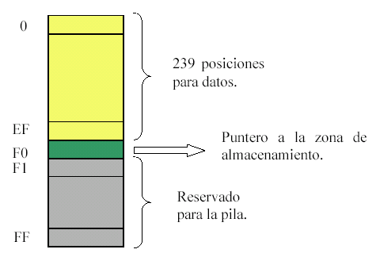
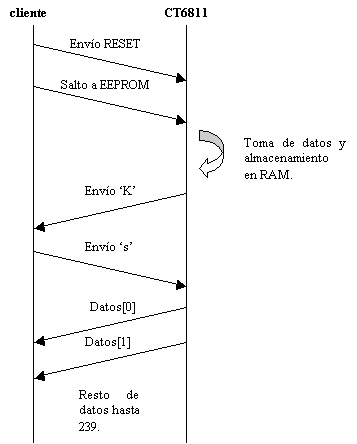

Aplicación
"Comunica"
La aplicación "Comunica" surge dentro de un proyecto en el que se pretende dotar de un cerebro electrónico a un coche solar teledirigido, utilizando para ello la tarjeta CT6811 de Microbótica. El propósito principal es la toma de medidas de diferentes magnitudes durante un recorrido del coche solar. Estas magnitudes serían carga de los paneles solares y de baterías auxiliares, número de revoluciones de los ejes,.... Una descripción más detallada de este proyecto se puede encontrar en la referencia [1].
El diseño de esta aplicación es bastante sencillo. Se compone de un programa principal que se almacena en la EEPROM de la CT6811 y un programa cliente que se ejecuta en el PC.
En este programa es donde se lleva a cabo el núcleo principal de la aplicación. Hay tres grandes bloques: comunicaciones serie, temporizador y toma de datos del conversor A/D.
Las comunicaciones serie se efectúan a través del puerto SCI de la tarjeta. Una peculiaridad es que el jumper JP5 se encuentra abierto, de forma que no se cortocircuitan Rx y Tx. Debido a esto, se debe realizar un RESET software y un salto a la EEPROM desde el programa cliente en el PC.
Se ha utilizado el temporizador principal del 68HC11. Como se verá más adelante, se toman 239 valores desde el conversor A/D. A parte de dividir la señal y comparar con el bit más alto del temporizador, por encima de todo esto se ejecuta un bucle de 65535 iteraciones, para lograr un espaciado mayor en la toma de medidas. En las pruebas se ha medido un tiempo total de 6 minutos 18 segundos en la toma de las 239 medidas.
Para el muestreo del conversor A/D se ha conectado un potenciómetro a la entrada PE0 del puerto E, tomando como tensiones de referencia la VCC y GND del propio puerto. En cada intervalo de temporización se toma una muestra y se almacena en la RAM, en posiciones consecutivas.
La funcionalidad del programa cliente que se ejecuta en el PC es bastante sencilla. Se encarga de hacer un RESET software de la tarjeta CT6811 y de saltar a la EEPROM del micro. Para ello hace uso de las funciones definidas en la librería CTS (ver referencia [2]). Una vez que el programa en la tarjeta ha finalizado, envía el carácter 'K' al cliente, solicitando este la confirmación de descarga de resultados. Una vez confirmada, se descargan los 239 datos, visualizándose en pantalla así como almacenándose en el fichero 'data.txt' junto con la fecha y hora de la realización de la descarga.

Como se muestra en la figura anterior, en las primeras 239 posiciones de memoria se irán almacenando los valores leídos del conversor A/D. En la posición F0 se almacenará el puntero que indica la siguiente posición de almacenamiento. Desde la posición F1 hasta la posición FF, se reservarán para el almacenamiento de los datos de la pila.
A continuación se muestra esquemóticamente el protocolo de comunicación implementado en "Comunica":

La instalación se reduce a descomprimir el fichero (comunica.zip o comunica.tgz) en el directorio deseado. Una vez hecho esto solo hay que ir al directorio comunica/src y hacer make. El fichero fuente en ensamblador se encuentra en el directorio comunica/src/asembler, y se llama comunica.asm.
El desarrollo se ha realizado utilizando las funciones de la librería CTS y sobre Red Hat 8.0.
Durante el periodo de pruebas se han llevado a cabo diversas mejoras y modificaciones:
Debido al funcionamiento del sistema, se ha probado una versión en la que la tarjeta se resetea con el jumper JP5 puesto y a continuación se quita. El coche efectúa su recorrido y después se efectúa la descarga al PC, sin enviar la tarjeta el carácter 'K' como en el caso general. Esto se hace así para evitar el tener que 'arrancar' la tarjeta conectada al PC (para que el programa cliente efectúe el RESET software).
Otra mejora realizada ha sido la ampliación del programa de la EEPROM para permitir la conversión de varios canales (hasta los 4 permitidos). En este caso el número total de medidas será menor, ya que en cada iteración se guardan cuatro valores en lugar de uno.
Otra mejora que se está estudiando es la descarga de datos a una calculadora HP, para permitir descarga de datos en varias sesiones si tener que estar cerca de un PC (en el caso de no tener un PC portátil).
|
[1] |
Proyecto coche solar www.naranjai.com |
|
[2] |
|
|
|
|
|
|
|
|
SOFTWARE PARA
LINUX |
|
|
Este documento en versión PDF |
|
|
Fuentes comunica, versión 1.0 |
|
|
Fuentes comunica, versión 1.0 |
|
|
Ejemplo de descarga de datos (4 canales, 20 medidas) |
|